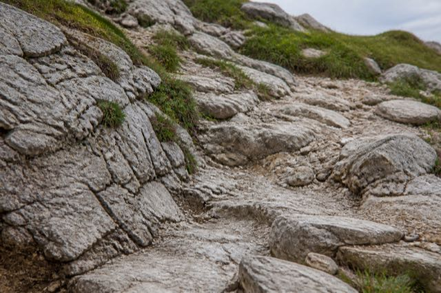
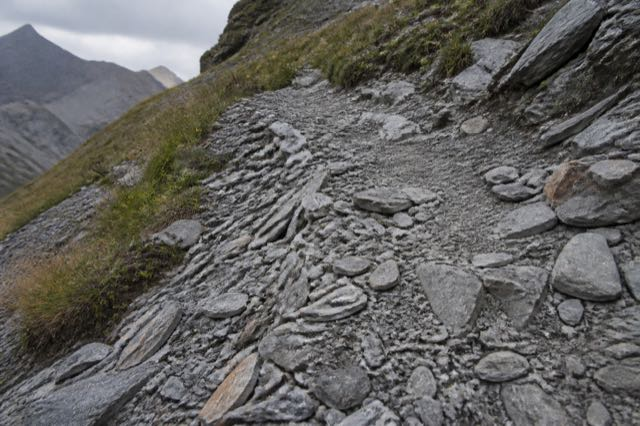
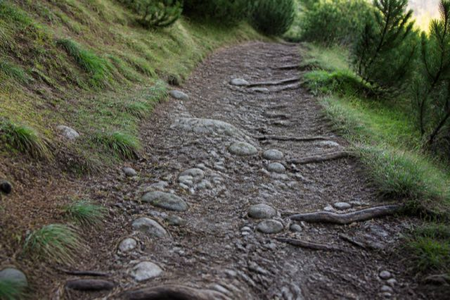

Rock changes the walk
Your dog walks every day and copes. Then one limestone traverse wears a pad through in an afternoon. The hidden variable is not distance; it is the surface, repeated for hours.

Read the surface, not the forecast
Texture decides how fast a pad wears. Look at what your dog will repeat for four hours, not at the one hard section you can see from the car park.

Sharp limestone
Angular edges plus repeated hard contact. Pads wear from the rim inward.

Loose scree
Every step slides, so every step abrades. Stones also fly up into wrists.

Compact trail
Even footing and the kindest surface. Still worth a check at each break.
Stone holds the heat the air has already lost
Air temperature is measured in shade, at head height. Your dog walks on bare limestone in full sun, and that rock can stay hot long after the afternoon feels pleasant to you. Burnt pads look fine on the trail and blister overnight.
Press the back of your hand flat on the rock your dog is about to cross and hold it. If you want to lift it before five seconds are up, it is too hot for pads. Wait, reroute into shade, or turn the walk into an early-morning one.
Is today's surface right for your dog?
Four answers, no account needed. It starts at 100 and subtracts only what you tell us, the same way every trail match works.
Nothing here argues against the plan. Check pads at every break anyway, because the surface is the part that changes fastest.
Nothing declared that we would subtract for. Keep checking anyway.
A low number is information, not a verdict. No score can see today's wind, your dog's mood, or the ice that never melted.
The 60-second pad check
Most people look at the pad and stop there. Six places, one paw at a time, sitting down. Tick them off as you go.
Boots and balms, honestly
Gear is not a substitute for a shorter route. Used at the wrong moment it creates the injury it was bought to prevent.
When boots help
- A pad is already worn or nicked and you still have to walk out.
- Long scree descents, crusted spring snow, or salted winter paths.
- Your dog has worn them on ten ordinary walks first, so they are boring.
When boots hurt
- First outing is the big hike. New rubbing points appear at hour three.
- Fitted tight enough to stay on. Grit inside sands the pad you protected.
- On hot rock they add heat, and a dog sheds heat through its paws.
Balms condition, they do not armour. Use them the evening before and after to keep pads supple, never as a coating on the morning of a rocky day. Soft, freshly greased pads tear more easily, not less.
Condition for the terrain, not the distance
A dog that walks two easy hours daily is not automatically ready for two hours of rock. Pads adapt to surfaces, and only slowly.
Change one variable at a time: duration, climb or surface.
Add time on your usual ground first. Only then swap in rougher ground at the same length.
One short route with the real surface, the real pack and the real rest stops, a week or two ahead.
Check gait and pads that evening and the next morning. Stiffness at breakfast means you went too far.
Five signs the walk is over
Any one of these, and the honest move is the shortest way down, not the loop you planned.
- 01The stride shortens. A dog stepping carefully on ground it trotted over an hour ago is already sore.
- 02It sits down unasked. Or seeks every patch of shade and does not want to leave it.
- 03Licking one paw at a break. Dogs tell you which foot hurts before it shows in the pad.
- 04A pad rim has lifted. Even without blood. The layer underneath has no defence against scree.
- 05Panting stays heavy at rest. Heat and hot stone arrive together, and pads burn fastest then.
Sources and medical references Last reviewed 19 August 2026
Veterinary first-aid and paw-care references: VCA Animal Hospitals, Merck Veterinary Manual and American Kennel Club. General information, not veterinary advice. When this page and the mountain disagree, believe the mountain.